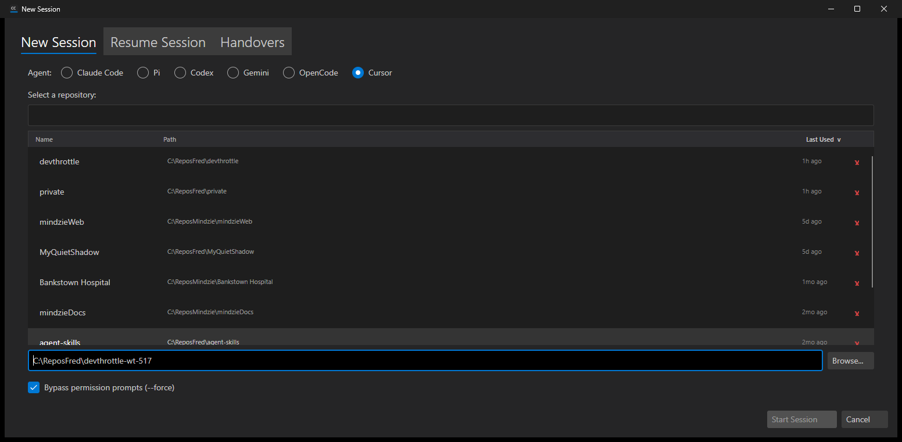
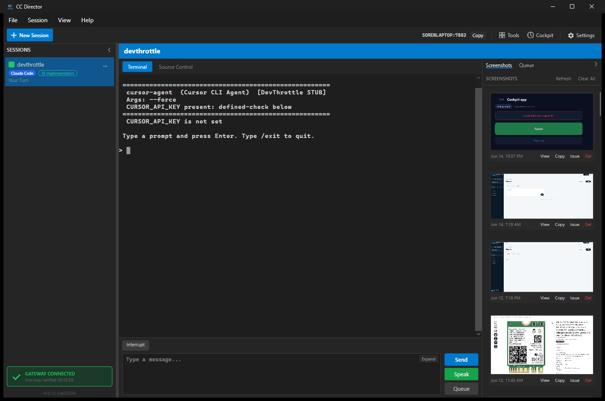
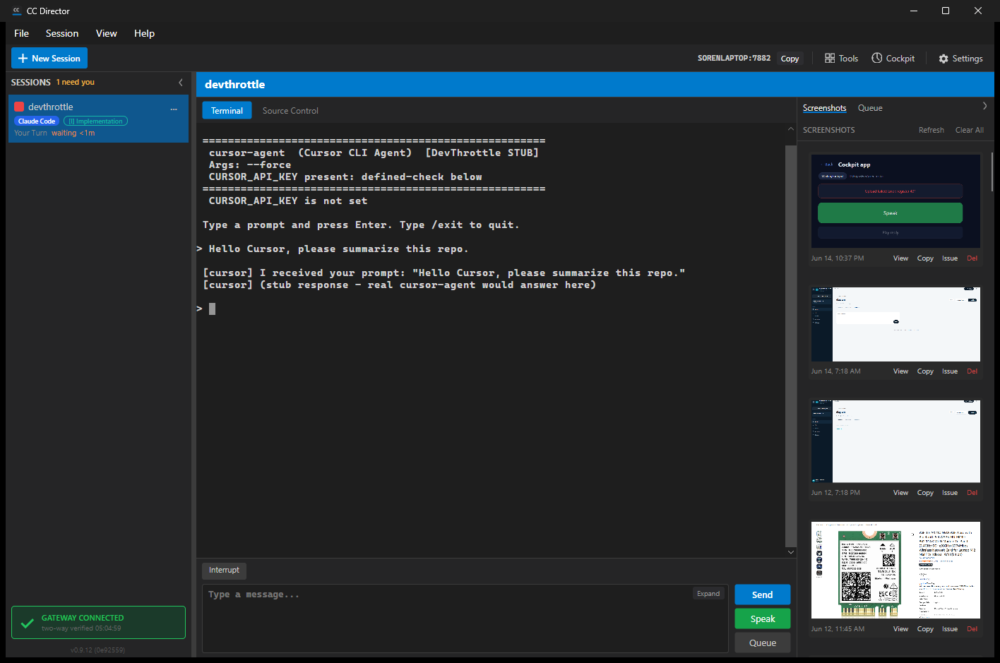

Status: PASS
Captured: 2026-06-26T06:34:52.3291228-04:00
CursorAgentPlugin as a concrete built-in plugin for Cursor.CursorDriver, preserving Cursor's verified control behavior: interrupt only, no transcript reads, and live stream-json parsing.AgentPluginRegistry now resolves AgentKind.Cursor through CursorAgentPlugin.dotnet build cc-director.sln --no-restore - Build succeeded, 0 warnings, 0 errors.dotnet test src/CcDirector.Core.Tests/CcDirector.Core.Tests.csproj --no-build --filter "FullyQualifiedName~AgentPluginRegistryTests|FullyQualifiedName~CursorAgentTests" - Passed: 34, Failed: 0.dotnet test src/CcDirector.Gateway.Tests/CcDirector.Gateway.Tests.csproj --no-build --filter FullyQualifiedName~AgentsEndpointTests - Passed: 18, Failed: 0.Fresh Cursor launch unavailable in the current slot environment: cursor-agent was not on PATH and no likely local Cursor Agent binary path was present. I did not mutate the user PATH or global config to fake an install. The screenshots below are copied into this proof from the existing Cursor live proof set at docs/cencon/proof/issue-517.
Cursor selected in the session UI:

Cursor live session reference:

Cursor responded reference:
